PHOTOS
OF THREE VILLAGES
SWIATKOWA WIELKA 1933
PHOTOS
1933 pictures of Swiatkowa Wielka taken by my
father, Fred Dran, when he traveled with his father, Michael Dran, on
a visit to the ancestral village.
M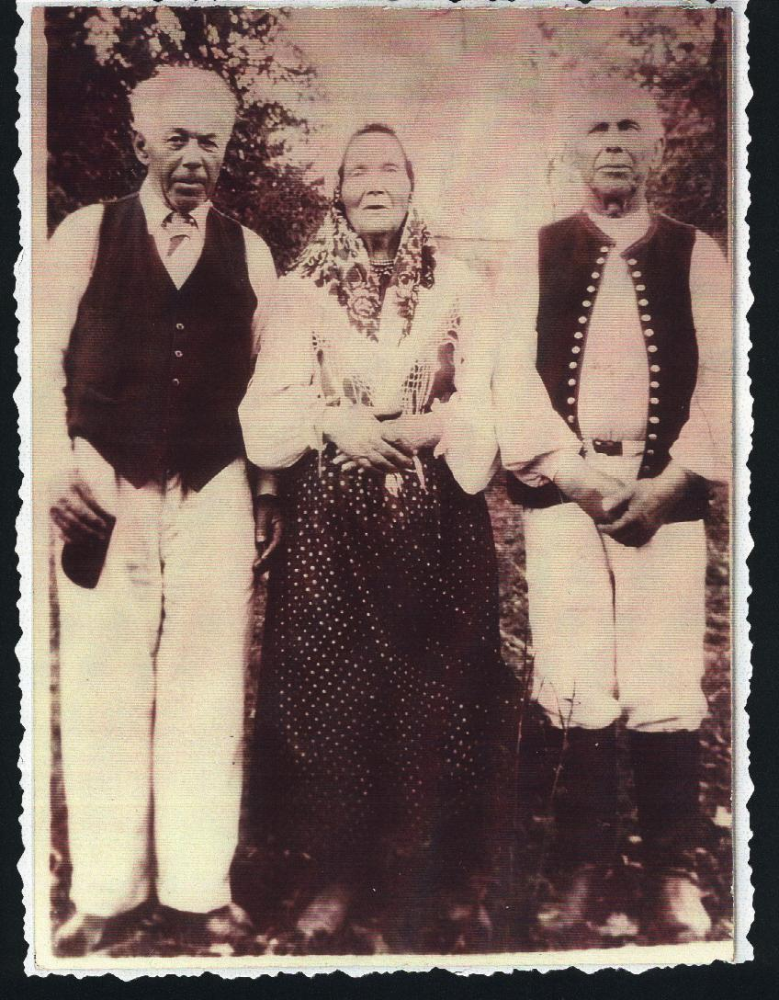ichael
Dran (my grandfather) age 73, his sister Pelagia, age 72 and brother
Demetri, age 69.
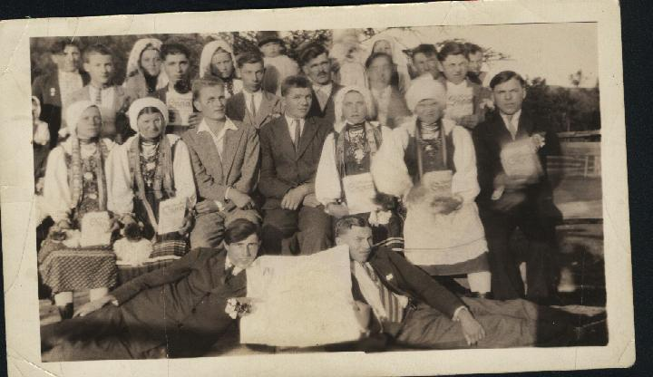
A group of neighbors: Notice that many of them
are holding a folded newspaper and the two young men in the front row
are holding an opened paper. I have always imagined that this was a
form of protest or of connection to something. If you read my
father’s journal, at one point he and a cousin visit Lvov and
he notes that there were two Ukrainian newspapers in the city.
Perhaps he bought a paper for all of his friends and they are holding
them to show the date the photo was taken.
1933 This is a cousin, Michael Dran (b.1918),
son of D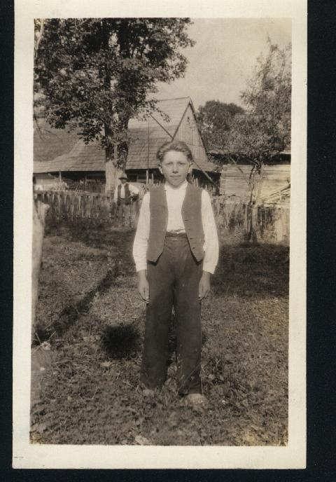emetri
Dran. Behind him is his older brother standing by the tree. Michael
immigrated to the USA about 1947.Photo gives an idea of the looks of
a Swiatkowa W. back yard.
e-mail me
at carpatho_mts@hotmail.com
top
of page
Return to
menu
2002
PHOTOS OF SWIATKOWA WIELKA
In May of 2002 I visited my ancestral villages
and now share these photographs with you.
Swiatkowa Wielka is now located in southeastern Poland surrounded by
Magurski/Magura
National Park Poland (click
your BACK button to return to this site after visiting a link)
S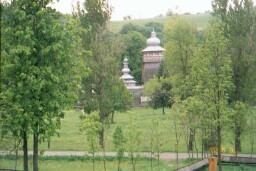wiatkowa
Wielka: View of the village church taken from the cemetery across the
road. Church is St Michael the Archangel, a wooden church with tin
roof, established in 1757 as a Greek Catholic church, now being used
by Latin rite. The charm of Lemko
churches results not only from their architectures but also from the
materials used in their construction, the very substance of the wood
material. These churches exist in harmony with the landscape. They
are usually situated close to rivers and creeks. (St Michael’s
is located on the banks of the Visloka river.). A circle of trees
always surrounds them so that domes, cupolas and bell towers emerge
through the foliage to present an impressive image. Churchyards are
encircled by wooden framework fences covered by miniature shingled
roofs.. Wrought iron crosses crown the roof-domes. The church
cemetery lies across the road. When the Lemkos were expelled in
1947, the Polish Army razed the gravestones in the cemetery, removing
all evidence of their generational history. Only a few tall granite
markers remain among the native grasses. Newer Latin rite graves lie
at the back of the cemetery, leaving the vacant front of the cemetery
as a memorial to the many souls whose ancestors inhabited the village
for centuries.
S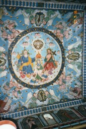wiatkowa
Wielka. Icons on the interior walls have been restored. This is a
view of a portion the ceiling. There is no iconostasis in the church
at this time. The interior log walls of the building have been
covered with canvas and the icons are painted on the canvas. Every
inch of the interior is painted in a sort of medieval style.
S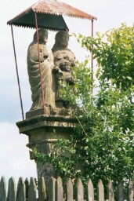wiatkowa
Wielka. One of several family shrines in the village that were
erected before 1890 when my grandfather left this village. Families
erected shrines on their property to celebrate some great happening
in their lives for which they praised God. All through Poland people
still stop and say prayers at roadside shrines like this.
top
of page
Return
to main
menu
2002
PHOTOS OF DUDYNCE VILLAGE
In May of 2002 I visited my ancestral villages
and now share some photographs with you. Views of the village of
DUDYNCE: The road to Sanok is in the far background on the right in
the first picture.
T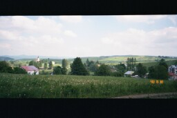he
village once had approximately 80 houses. Currently the village road
is about one mile long, following a small stream. There are some
twenty houses remaining, most of them built after WWII. The wooden
Greek Catholic Chapel, The Synaxis of the Blessed Virgin Mary,
established in 1802, was dismantled after the expulsion of Lemko
residents in 1947.
V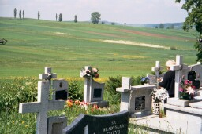iew
of the Dudynce village farmlands from the Greek Catholic Cemetery.
Many of the metal crosses on the graves showed evidence of bullet
holes. From my interviews with present day villagers in 2002, I was
told that there was much fighting among Polish, Russian and Ukrainian
bandits in this area in 1947. Many houses were destroyed by fire.
S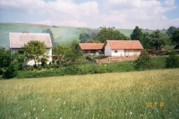ome
log houses and barns still exist in Dudynce. Residents in this area
have for generations whitewashed their houses.
Return
to main
menu
Email
me at carpatho_mts@hotmail.com
top
of page
2002
PHOTOGRAPHS OF THE VILLAGE OF HRABOVCIK
In
May 2002 I visited my ancestral villages and now share some of the
photographs with you. The village of HRABOVCIK on the south slopes
of the Carpathian Mountains, now located in northeastern Slovakia,
near the town of Svidnik
.( Use
the back button to return to this site)
Hrabovcik was originally a Rusyn village.
H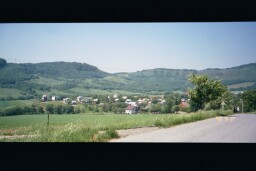rabovcik:
This is the view of the village as one heads down the main road. The
nearest town, Svidnik, is two miles to the east. All of the homes
appear to have been built since WWII.
Click Svidník
to learn more.
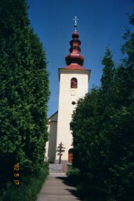
St.
Michael’s Greek Catholic Church in
Hrabovcik, established in 1812, has recently been restored. The
construction is of stone masonry and stucco. The walls are about 3
feet thick and one has a sense of calm and coolness upon entering.
My great grandmother Catherine Slota Siry was married in this church
in 1878 and my grandfather Michael Siry/Sirak was christened here in
1885. The German army stabled their horses in the church during
WWII. During that time, the priest lived in the church to protect
the icons.
I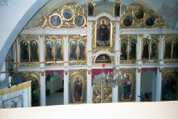nterior
of St. Michael’s Church,
Hrabovcik
Visit Rusíni
, select fotogaleria, then Hrabovcik,
to see other scenes of the village and church.
Return
to main
menu
top
of page
e-mail
me at Carpatho_mts@hotmail.com